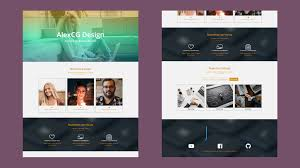

Con estudios y formación en Gobernabilidad y Gerencia Política por The George Washington University y la Pontificia Universidad Católica del Perú con conocimientos de manejo de Redes Sociales en las entidades públicas ha realizado estudios de Gobierno en la era de las Redes Sociales en el Campus Virtual del Programa de Gobierno Electrónico de la Organización de Estados Americanos ( OEA ) . Experiencia de trabajo con instancias de gobierno nacional, regional y local en las áreas de Tecnología de la Información y Comunicaciones, Consultor e investigador Internacional en temas de gobierno electrónico, transparencia y sociedad de la información.
Experiencia
Desarrollador Web
Empresa ABC - 2022 - 2023
Desarrollo de aplicaciones web usando HTML, CSS y JavaScript.
Creación de bases de datos MySQL para la gestión de usuarios.
Programador Junior
Empresa XYZ - 2020 - 2022
Desarrollo de módulos en PHP y Laravel.
Optimización de aplicaciones para rendimiento y velocidad.
Portafolio

Proyecto Web
Un sitio web desarrollado con HTML, CSS y JavaScript.
Aplicación React
Aplicación web interactiva usando React.js y Firebase.
Blog Personal
Desarrollado con PHP y MySQL para gestión de entradas.